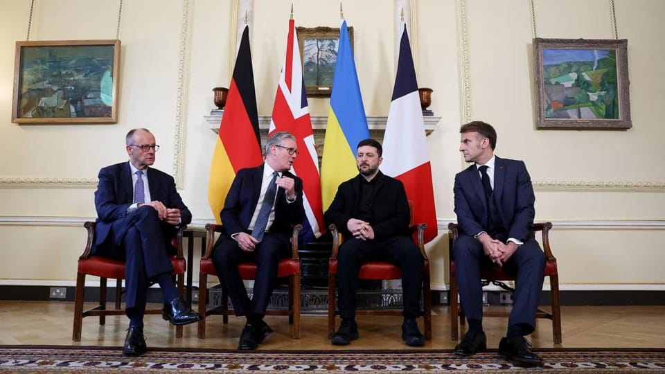

世界苦茶12月09日新闻 | 51条 | 中共政治局强调“外贸斗争”

中共政治局强调“外贸斗争” | 美国同意英伟达H200出口中国 | 中日军机对峙加剧 | 马航MH370索赔案判决 | 中国11月出口增长5.9% | 疯狂动物城票房突破30亿元 | 日本与台湾均发生地震
苦茶数据
美元兑人民币：7.06（昨日7.06，前日7.06）
美元兑日元：156.28（昨日155.06，前日155.37）
上证指数：3909（昨日3927，前日3902）
标普500指数：6846（昨日6870，前日6857）
比特币：90580（昨日91070，前日89567）
布伦特原油：62.43（昨日63.88，前日63.75）
中国新闻
• 港立法会选举投票率历届次低 北京批反中乱港分子煽惑选民不投票。
香港立法会选举在大埔火灾阴影下如期举行，地区直选31.9%的投票率仅比上届略高，为历届次低。中央政府驻港国安公署批境外敌对势力和反中乱港分子煽惑选民不投票或投无效票，以遂“以灾阻选”的政治目的。香港第八届立法会选举上星期天举行，结果星期一凌晨出炉。综合香港媒体报道，地区直选投票率较上届多1.7个百分点。有131万7682人参与投票，较上届少近3万3000人。选举委员会界别的投票率达99.45%，功能界别的投票率为40.09%，分别比上一届高出0.97%和7.87%。这是2021年香港修改选举制度，落实“爱国者治港”后的第二届立法会选举。
• 中国海警在台湾海峡关键咽喉要冲举行首次演练。
中国海警在台湾海峡战略咽喉首次开展救援演练 中国海警在台湾海峡关键航段首次开展搜救演练。周六的大规模演练以台湾浅滩为中心——该浅滩位于海峡南端，水浅且险恶。演练地点凸显了北京在这一全球贸易、军事战略与两岸政治交汇的关键咽喉处首次开展实战性行动。负责本次演练的福建海事局表示，救援演练旨在“维护该敏感水域的航行安全与秩序”。福建海事局在其官方社交媒体上称，此次“前所未有”的演练由其与交通运输部下属的海上救助机构联合开展，模拟了一起货船发生火灾的救援任务。官方发布称：“演练模拟一艘货船艏部发生火灾，船员落水的情况。接到遇险呼救后，福建海上搜救中心启动应急预案，对事态进行初步评估，指导船员开展自救。
• 致命大火后全港224栋私人大楼外墙棚网已拆除。
香港大埔宏福苑火灾造成逾百人死亡后，全港已有224栋正在进行大维修的私人楼宇拆除外墙棚网。据香港政府新闻网，截至上周日下午6时，已有224栋私人楼宇移除外墙棚网，另有四栋申请延期并已获屋宇署批准，预计可在本周内完成拆除。还有两栋大楼因承建商与法团长期存在合约纠纷，导致拆棚工程受阻。当局已安排政府承建商先处理所需工程，相关费用日后再追回。宏福苑上月底发生全港近80年来最严重火灾，造成至少159人死亡，不合规的棚网是造成火灾迅速蔓延的原因之一。灾后港府下令，要求全港200多栋正进行大维修工程的私营高楼，以及10多栋公营或政府大楼，须在上周六或之前全部拆除棚网。
• 北京法院宣判马航MH370八索赔案 每案赔偿290万元人民币。
中国北京法院对马航MH370航班八名失联乘客家属索赔案一审宣判，每案赔偿290万元人民币。综合新华社和中新社报道，北京朝阳法院12月5日依据《蒙特利尔公约》以及中国相关法律规定，判令马来西亚航空公司和马来西亚国际航空有限公司，就每案赔偿乘客家属死亡赔偿金、丧葬费、精神损害抚慰金及其他损失和相关费用共290余万元。2016年起，75名失联乘客家属陆续提起诉讼，要求马航、马航国际等赔偿损失、建立搜救基金等，共形成78件案件。法院审理查明，MH370客机在2014年3月8日飞行途中失联。2015年1月19日，马来西亚政府正式宣布MH370航班失事，并推定机上所有239名乘客和机组人员已遇难。
• 中日围绕军机海上对峙展开激烈口水战。
中日紧张局势在双方军机海上对峙后再度加剧，中国航母打击群星期天继续在靠近日本的海域航行，两国星期一也围绕对峙事件的归责展开激烈口水战，日本称中国的指控毫无根据，中国则反指日本“恶人先告状”。综合彭博社、路透社和日本《每日新闻》等报道，日本自卫队星期一称，一支靠近日本航行的中国航母打击群星期天在冲绳群岛以东的太平洋海域，持续展开密集的空中行动；航母上的舰载机，在刚过去的周末进行了约100次起降。日本内阁秘书长木原稔星期一在例行记者会上说，日本将“冷静而坚定地作出回应，并继续监视中国军队在我国周边海域的动向”。中国海军的这次演习，正值中日关系高度紧张，并引发日本强烈抗议。
• 周末对峙后，日本持续监视靠近冲绳的4艘中国海军舰艇。
日本防范靠近冲绳的4艘中国军舰 在军事对峙后保持监视 解放军海军航空母舰及三艘导弹驱逐舰周日夜间在冲绳与南大东岛之间、距喜界岛以东约190公里水域向东北航行，日本防卫省表示。防卫省称，周六和周日观测到航母舰载战斗机与直升机约50次起降，并已紧急升空自卫队战机应对。日本早些时候声称，中国海军战机在周六两起分别事件中间歇性地对其F-15战机照射火控雷达——这在战术上是导弹交战的前奏。日本防卫大臣小泉进次郎周日将此行为称为超出安全飞行范畴的“危险行为”，并表示东京已正式向北京提出抗议。
• 因高市早苗言论引发紧张，中日渡轮停航。
名为“鉴真号”的中日航线客轮因高市早苗言论引发紧张局势而停航 负责上海往日本大坂和神户航线的“鉴真号”客轮自周六起已被暂停运营。日方营运公司日本中国国际航运周一在一份声明中表示，停航是“应中国方面的请求”。日方称，该请求是出于担忧两国间的旅行安全无法得到保障。声明称停航将“暂时”持续，目前尚不清楚何时恢复运营。高市早苗的言论激怒了北京，当局认为这些言论是对中国内政的干涉，并违背了东京长期对台政策的不明确战略。此后，北京已采取一系列报复性措施，对日本施加经济、外交和军事压力，包括敦促公民避免前往日本旅行。
• 中国查处1818名含明星网红在内的双高人员。
在国家税务总局周一举行的例行新闻发布会上，国家税务总局政策法规司司长戴诗友介绍，今年前11个月，税务部门共查处3904户高风险加油站，查补税款41.63亿元；查处1818名包括明星网红在内的 “双高” 人员，查补税款15.23亿元。此外，税务部门积极支持引导纳税人主动纠正失信行为。今年以来，共有1168户重大税收违法失信主体采取自我改正措施后，实现了信用修复，提前移出“黑名单”，同比增长40%；超过1300件经核查未发现检举人反映的涉税问题，各地税务部门均依法出具了无问题税务稽查结论。
•《疯狂动物城2》中国内地票房破30亿元。
动漫电影《疯狂动物城 2》中国内地上映12天票房突破30亿元，不仅刷新进口动画票房纪录，更以强劲势头拉动观影消费、影院运营与周边商业。自11月26日上映以来，影片连续10余天位居票房榜首，首周末排片占比高达82.5%，单日票房峰值达7.39亿元。截至12月8日，累计票房已突破30亿元，成功登顶中国影史进口动画票房冠军，并跻身引进片票房亚军，仅次于《复仇者联盟4》。记者发现，上海浦东各大影院大幅增加排片，多数影院每日排片达三四十场。4D版本尤其抢手，掀起 “沉浸式观影” 风潮，社交平台上相关体验分享点赞数万，口碑持续发酵。
• 千万粉丝博主蓝战非自曝在南非被劫持 称绑匪提前半年布局。
蓝战非周二发文称，其在南非开普敦一家五星级酒店内被一人伙同两名黑人持刀劫持，事件持续四五小时。绑匪据称买通机场与酒店人员，掌握其行程，并试图胁迫其转账、申请网贷，同时收集指纹、毛发、精液等生物信息以威胁伪造“强奸”案阻止报警。绑匪疑似提前半年布局，曾伪装粉丝在机场偶遇未果，后在酒店房间实施夜间劫持。蓝战非说，最后因选择官方出租车而躲过更危险的诱捕。事发后，蓝战非立即向国内及中国驻当地使馆报警，但被告知破案概率极低，主要为防被栽赃。但目前蓝战非已经将这篇文章删除，并另发微博表示“不需要大家同情我，但我希望别无故的去猜忌与造谣。”
印太新闻
• 鲁比奥和赫格塞斯与澳大利亚同行讨论印太地区安全。
广告 俄比奥与赫格塞思在华盛顿与澳大利亚同行讨论印太安全 在会谈中，俄比奥称赞美澳在关键矿产，国防生产和部队部署方面的合作 阅读时间：2分钟 为什么你可以信任南华早报 1 美国国务卿马可·鲁比奥和国防部长皮特·赫格塞思周一在华盛顿与澳大利亚同行会面，举行年度会谈，重点关注印太安全以及应对中国大陆在该地区日益增强的强硬姿态，包括在南海的行动及针对台湾的举动。
• 台媒称北京提“三门票”作为“郑习会”前提 国民党斥恶意捏造。
台湾亲绿媒体《自由时报》报道，在野党国民党主席郑丽文将在农历年前后与中共总书记习近平会面，北京还提出“三张门票”为前提，包括要国民党挡下民进党政府提出的军购案。国民党随即驳斥报道造谣，恶意揑造所谓的“门票说”，意在操弄政治。《自由时报》星期天引述北京涉台系统及国民党内部的消息报道，中国大陆国台办主任宋涛说，若要促成“郑习会”，国民党必须拿出“坚定走在历史正确轨道”的态度，并做到三件事。据报道，北京这三项被国民党内私下称作“三张门票”的要求包括：民进党政府提出的军事采购预算不该通过，各种以限制，歧视大陆配偶，以及大陆人民往来经商投资的国安法立法进程应即刻被阻止。
**• 台湾花莲东部海域8日19:24发生5.7级地震，震源深度24.5千米，花莲、南投多地录得最大震度4。 **
• 美国最新国家安全战略涉台篇幅增加 阻涉台冲突为优先事项。
特朗普政府发布的最新《美国国家安全战略》以更长篇幅阐述台湾议题，将阻止涉台冲突列为“优先事项”，并要求盟友投入更多资源，加强集体战略防御。受访学者对这份文件看法不一，有学者认为它淡化了台湾问题，也有学者认为这份文件的涉台表述更趋现实，显示美国保护台湾是为了物质层面的战略利益。国家安全战略是美国新总统上任时，向国会提交的战略文件。星期五公布的这份最新文件，是特朗普今年1月上任后的第一份国家安全战略文件。台湾被纳入“阻止军事威胁”章节，在三个段落中八次提及。相比特朗普2017年第一任期时发布的国家安全战略在一个段落中三次提及台湾，以及拜登政府2022年文件中一个段落六次提及。
• 日本东北海岸发生强烈地震。
日本东北海岸发生7.6级强震，数千人被下令撤离家园。日本气象厅称，地震发生在23:15，震源深度约50公里，震中位于青森沿海约80公里处。地震发出海啸警报，现已解除，观测到海浪最高约70厘米。日本首相高市早苗表示，至少7人受伤，并警告居民在未来一周内继续警惕余震。她对受灾民众说：“请重新确认日常防震准备，如固定家具，并在感到摇晃时立即准备撤离。” 路透社称，约9万名居民被下令撤离。内阁官房长官木原稔表示，政府已在首相危机管理中心设立应对办公室并召集紧急小组。“我们正全力评估灾情并实施紧急救灾措施，包括搜救与救援行动，”他补充道。东北沿海部分子弹头列车服务已被暂停。
• 发生在泰柬边境的新一轮冲突源于长期的领土争端。
泰国与柬埔寨围绕相互竞争的领土主张的积怨再次公开爆发武装冲突，就在双方几个月前在美国总统唐纳德·特朗普推动下同意停火、结束边境交火之后。两个东南亚国家在七月曾为期五天在有争议的边境地区交战，造成数十名平民和军人死亡，双方数万名村民被疏散到安全地带。周一，停火以来最激烈的战斗爆发。尽管尚不清楚谁先开火，泰方在边境发动了空袭，同时地面战斗也爆发。争端可追溯到20世纪初 泰国和柬埔寨数世纪以来积怨深重，且在超过800公里的陆地边界上时有紧张。双方相互竞争的领土主张主要源于1907年柬埔寨处于法国殖民统治时期绘制的一幅地图。
科技新闻
• 特朗普称将签署行政命令阻止各州制定人工智能监管措施，尽管存在安全担忧。
唐纳德·特朗普总统周一证实，他计划签署一项行政命令，以更宽松的联邦政策优先于各州对人工智能的监管。“如果我们要在人工智能领域继续领先，必须只有一本规则手册，”特朗普在Truth Social上发文说。“在这场竞赛中，我们此刻击败了所有国家，但如果要让50个州——其中许多是恶劣行为者——参与制定规则和审批程序，这种领先地位不会持续太久。”该帖证实了自上月行政命令草案流出以来学界，安全组织和两党州议员们表达的担忧。
• 特朗普12月8日称，英伟达将被允许向中国出口H200芯片。
但需向美国政府支付25%的费用。美国商务部正敲定政策细节，AMD和英特尔的芯片也将适用于该政策。白宫官员称，25%的费用将作为进口税，在芯片从台湾进入美国时征收；芯片在出口至中国前需接受美国官员的安全审查。
经济新闻
**• 派拉蒙天舞公司12月8日对华纳兄弟探索发起了恶意收购要约，出价为每股30美元现金。 **
派拉蒙的报价高于奈飞提出的每股27.75美元的现金加股票方案，竞购对象为华纳兄弟全部业务。派拉蒙表示，恶意收购的原因是华纳兄弟管理层“从未认真处理”派拉蒙早些时候提出的多项报价。“华纳兄弟股东理应有机会考虑我们更优的全现金收购整家公司股权的要约”。派拉蒙向华纳兄弟的股东表示，其收购华纳兄弟所有股权的报价相比奈飞的方案，向股东多提供了180亿美元现金。派拉蒙还强调，其交易更可能获得监管机构的批准。此前特朗普曾表示，奈飞与华纳兄弟的合并“市场占有率庞大，可能有问题”。派拉蒙的报价得到了由特朗普女婿库什纳经营的投资公司Affinity Partners的支持。与此同时，特朗普的态度仍存变数。他8日抨击派拉蒙允许CBS的王牌节目《60分钟》采访曾与他发生争执的共和党众议员玛乔丽·泰勒·格林。
• 徳外长：中国向欧企发放稀土出口许可时将采取建设性态度。
德国外交部长瓦德富尔与中国高层进行一天的会谈后透露，中国已积极表态，在向欧洲企业发放关键稀土出口许可时将采取建设性态度。瓦德富尔星期一抵达北京开始两天访华行程，并会见了中国国家副主席韩正、外长王毅和商务部长王文涛。据德国外交部此前消息，瓦德富尔星期二将南下广州进行参访。综合路透社、法新社报道，瓦德富尔星期一与中方会谈后在记者会上说，中国已释放信号，表示愿意优先处理欧洲制造商面临的稀土供应短缺问题。
• 万达商管寻求推迟偿付一笔4亿美元债券。
中国房地产开发商万达集团旗下的商业地产部门，寻求债券持有人同意将一笔4亿美元债券的到期日延后两年。综合彭博社、每日经济新闻和澎湃新闻报道，大连万达商业管理计划在明年1月5日举行债券持有人会议，寻求债券持有人同意将债券到期日延长至2028年2月13日，同时维持11%的票面利率和每半年派息一次的安排。根据公告，这只债券将于明年2月13日到期，届时发行人须偿还债券本金及应计未付利息。万达商管表示，延长到期日将帮助集团缓解短期流动资金压力，为有序推进业务计划和资产变现，争取更多时间。万达商管有两笔总计7亿美元的债券分别在明年1月和2月到期。1月份到期的3亿美元债券。
• 中国11月出口超预期反弹 对美出口进一步放缓。
受全球贸易整体回升以及晶片和汽车出口高速增长带动，中国11月出口额超预期反弹，逆转10月的跌幅。中国海关总署星期一发布的数据显示，中国11月出口增速按美元计，同比增长5.9%，比10月加快7.0个百分点，高过路透社预估的3.8%增长，也高于彭博社调查得出的4%预期中值。从出口商品来看，11月中国机电及高技术产品出口增长加速，其中集成电路和汽车出口额分别同比增长34.2%、53.0%，增速较上月加快18.9、7.2个百分点。从出口国家地区来看，11月中国对欧盟出口增速加快至14.3%，创下自2022年7月以来最快增速。
• 中共政治局强调更好统筹经济和外贸斗争。
中共政治局召开会议部署明年经济工作，会议除重申稳就业、稳企业、稳市场、稳预期，也罕见提出“更好统筹国内经济工作和国际经贸斗争”。受访学者分析，这是北京在面对中美关系变数等外部不确定性加剧，以及经济下行压力持续加大的预备性宣示。一年一度的中共中央经济工作会议预计将在本月中旬召开，在此之前，中共政治局星期一召开会议，由中共总书记习近平主持，分析研究明年经济工作，并审议了《中国共产党领导全面依法治国工作条例》。（翻评：“国际经贸斗争”是去年提法，不过首次放在顶级经济政策里。）
• 中美贸易协议推动下 中国11月大豆进口量创四年新高。
美国贸易代表格里尔透露，中国正按中美贸易协议推进对美国大豆的采购，目前已完成本季承诺的约三分之一；同时，中国11月的大豆进口量也创下四年来的新高。据彭博社报道，格里尔星期天在福克斯新闻《星期天简报》节目中说，中国一直遵守中美贸易协定的条款，美国也持续监督并核实相关承诺，以维持稳定的双边贸易关系。他还说，中国在本种植季的大豆采购中，已完成约三分之一。中美元首10月底在韩国会晤后，美国白宫11月初发布清单，称两国达成历史性经贸协议。其中，中国将在今年最后两个月购买至少1200万吨美国大豆，并在未来三年每年购买至少2500万吨。
• 美国国会公布法案，限制对华科技投资并遏制生物技术合作。
美国国会公布国防法案，拟限制对华科技投资并切断生物技术联系 国防授权法案方案恢复了此前搁置的对美对外投资与生物技术限制，表明国会山对北京的立场日益强硬 美国国会正准备就一项庞大法案进行表决，该法案将限制美国对中国在敏感领域的对外投资，并禁止联邦政府与中国生物技术公司签约——这两项有争议的措施去年在类似立法中曾被排除在外。经过数月谈判，这些条款被纳入周日公布的一项折衷国防法案草案。被称为国防授权法案的年度法案可能将在本周进行表决。众议院和参议院的议员在休会前仅剩两周时间。NDAA作为连续六十多年来每年需通过的立法之一，常被视为“必须通过”的重大法案之一。
• 美国、欧盟和日本是否寄希望于国防开支来提振经济。
随着美国、欧盟和日本加大国防开支，他们的真实意图是刺激经济吗？随着发达经济体增加军事支出，目标多重——包括在国防供应链上减少对中国的依赖 在英国历史学家A.J.P.泰勒把战争称为“发明之母”六十多年后，世界各地的经济体似乎正加紧增加军费，部分目的在于振兴工业生产。泰勒所指的是第一次世界大战中坦克、飞机和毒气的出现，以及第二次世界大战中雷达、喷气发动机和原子弹的诞生。更现代的例子，如基于卫星的导航系统和互联网，则是结束于1989年的美苏冷战的产物。数十年后，将军事开支视为推动增长的催化剂的观念，尤其在重工业衰退的地区，再次成为焦点。
• 特朗普政府宣布向农民一次性支付120亿美元。
特朗普政府周一宣布向农民一次性发放120亿美元援助款以应对今年关税上涨，主要针对种植大豆和玉米等作物的农户。该举措在白宫的一次圆桌会议上公布，参会者包括受影响的农民以及财政部长斯科特·贝森特和农业部长布鲁克·罗林斯。特朗普在会上将该计划与政府因其大规模关税政策而获得的收入联系起来，并提到他在农民中的人气。
• 德国外交部长呼吁结束围绕中国稀土和芯片的“不确定性”。
德国外长呼吁消除对中国稀土和芯片的“不确定性” 德国外长约翰·瓦德富尔与中国商务部长王文涛周一的会谈中，中国向德国供应的稀土、半导体及其他大宗商品成为讨论重点。瓦德富尔在启程访华、旨在应对柏林贸易与地缘政治关切时表示：“在所有这些领域都存在不确定性，需要加以消除。” 据路透社报道，北京方面远未被说服为德国制造商依赖的稀土等矿产颁发通用出口许可。彭博社另日报道称，瓦德富尔对商务部长表示，中国是德国“最重要的贸易伙伴”，柏林希望“保持并扩大”这一关系。瓦德富尔还预计将会见外交部长王毅和中共外交负责人刘海星。
• 马克龙向中国发出贸易最后通牒：纠正顺差，否则将面临关税。
法国总统表示，欧盟可能会效仿美国的保护主义，并警告不平衡的商品流动导致中国“实际上在扼杀自己的客户” 埃马纽埃尔·马克龙警告北京，如果到2026年末双方之间的贸易失衡问题仍未解决，欧洲将被迫对中国商品进行“强力反制”——包括以美国政策为范本的惩罚性关税。“我已经告诉他们，如果他们不采取行动，我们欧洲人在未来几个月将被迫采取强有力的措施并减少合作，效仿美国的做法——例如对中国商品征收关税，”马克龙在周日发布的报道中说道。这一最后通牒是在他此行期间其他公开表达的关切之后提出的，但语气更为强硬。
• “一个大机会”：为什么西班牙的新电动汽车计划为中国提供了可乘之机。
分析人士表示，马德里这一雄心勃勃的战略可能取决于吸引更多中国投资，从而赋予中国企业更大筹码 西班牙提出的数十亿欧元计划，旨在成为欧洲电动汽车市场的领先者，分析人士称，这为中国汽车品牌提供了黄金机会，中国车企可能对该战略的成功至关重要。马德里周三公布的“西班牙汽车2030计划”旨在动员政府资金，为消费者提供补贴，支持充电桩建设并帮助西班牙汽车产业——该产业约占该国经济产出的10%——抓住电动汽车热潮。西班牙首相佩德罗·桑切斯表示，政府计划明年在电动车直接购车补贴上投入4亿欧元，另有3亿欧元用于帮助建设更多充电桩。
• 中国贸易顺差突破创纪录的1万亿美元，尽管贸易战带来不确定性。
11月外销增长5.9%，超出预期——但对美出口继续大幅下滑 中国实现新的贸易顺差里程碑，今年前11个月贸易顺差达到历史新高1.076万亿美元，超过去年的纪录，这主要得益于在美国总统唐纳德·特朗普发起的关税战带来的不确定性下，中国大力拓展出口市场和供应链多元化。1月至11月的贸易顺差高于此前2024年全年创下的9922亿美元纪录。与此同时，今年前10个月的贸易顺差为9648亿美元。海关周一公布的数据显示，11月外销同比增长5.9%，达到3303.5亿美元。这较10月1.1%的跌幅有所回升。
• 日本7～9月GDP修正值年率下降2.3%。
日本内阁府12月8日公布的7～9月的国内生产总值修正值显示，剔除物价波动影响、经季节性因素调整后的实际值环比减少0.6%，换算成年率则减少2.3%。与11月公布的速报值相比向下修正。由于此次纳入了最新的经济指标，设备投资等数据下滑。与第一次速报时相同，实际数据时隔5个季度转为负增长。低于日经QUICK事先汇总的民间预测中间值。民间预测的幅度为年率减少1.6%～减少2.4%。设备投资从速报值的环比增长1.0%转为减少0.2%。这是时隔2个季度出现下降。
• 日美央行政策「逆行」，日元仍难走强。
在外汇市场上，日元汇率行情的上行面临沉重压力。市场预计，日美两国的中央银行将在本周至下周期间敲定相反方向的政策调整方针，也就是「美国降息，日本加息」。按照常理，这是推动日元升值的主要原因，但日元汇率却一直徘徊在1美元兑155日元附近的贬值水准。「纹丝不动的日元」汇率要出现变动，可能需要日美两国的货币政策都发生明显变化。美国联邦储备委员会将于12月9日～10日召开联邦公开市场委员会会议，讨论是否进行降息。
• 大型干散货船租船费三周暴涨8成，创2年来新高。
运输铁矿石等货物的大型干散货船的租船费在三周内暴涨了8成，创下两年来的新高。巴西和澳大利亚发往中国的铁矿石运输需求均保持旺盛，船只的供需关系趋紧。作为指标的好望角型船的现货租船费在12月3日攀升至每天4万4672美元。比三周前的11月12日上涨8成。这是自2023年12月的2年来首次重返4万美元区间。12月4日的租船费比上一交易日下跌1%，但仍维持在4万4000美元区间。
俄乌战争
• 俄波罗的海天然气设施受制裁后首次向中国供气。
俄罗斯一家液化天然气出口设施自今年1月受美国制裁后，首次向中国交付液化天然气。分析认为，这显示北京和莫斯科之间的能源合作持续升温。彭博社汇编的船舶数据，以及路透社引述市场分析公司LSEG的船舶追踪数据都显示，瓦莱拉号货轮星期一抵达中国南方的北海港。这艘货轮10月在俄罗斯天然气工业股份公司位于波罗的海的波尔托瓦亚设施，装载一批液化天然气。瓦莱拉号和波尔托瓦亚设施此前都被美国拜登政府列入制裁名单，以阻止俄罗斯扩大液化天然气出口。中国不承认这些单边制裁，并在过去几个月持续增购被列入黑名单的俄罗斯天然气，进一步加强两国的能源联系。
• 美国国防法案提议在2027年之前每年向乌克兰提供4亿美元军事援助。
美国立法者于12月7日公布了一份9000亿美元的国防法案，规定在2026和2027财政年度每年为乌克兰安全援助倡议拨款4亿美元。该法案的最新版可能最早于本周在众议院进行表决，代表了今年早些时候众议院和参议院各自通过的两份草案之间的妥协方案。该法案将重新授权使用USAI——一项由五角大楼主导，通过与美国国防企业签订合同向乌克兰提供武器的项目。国会还要求更频繁地报告由其欧洲盟友向基辅提供的援助情况，反映出华盛顿推动欧洲承担更多支持乌克兰责任的意图。该提案较白宫的请求增加了80亿美元，还提高了军人薪酬，为“金穹”防空体系拨出更多资金，强化印太地区的军事部署。
• 日本拒绝欧盟加入对俄罗斯资产计划的请求。
日本拒绝了欧盟提出的加入其利用被冻结的俄罗斯国家资产为乌克兰提供资金计划的提议，这使欧盟希望为该倡议争取全球支持的努力受挫。两位参与周一七国集团财长会议并就会议内容向POLITICO通报的欧盟外交官表示，东京对布鲁塞尔提出的复制其计划——将比利时银行Euroclear持有的俄罗斯主权资产的现金价值发放给乌克兰——的请求表示冷淡。日本表示，无法动用约300亿美元的、存放在其境内的被冻结俄罗斯资产来向乌克兰发放贷款。
• 泽连斯基公布乌克兰总统办公厅新主任候选人。
12月8日，泽连斯基总统提名了总统办公室主任一职的候选人，此前他的前办事处主任安德烈·叶尔马克已被免职。候选人包括现任国防部长，此前任职时间最长的总理丹尼斯·什米哈尔，数字化转型部长米哈伊洛·费多罗夫，军事情报局局长基里洛·布达诺夫，总统办公室副主任兼前指挥官帕夫洛·帕利萨，以及第一副外长，乌克兰重要谈判代表之一的谢尔吉·基斯利察。叶尔马克于11月28日辞职，此事距今已一周多，缘起乌克兰迄今最大的一起腐败丑闻，影响触及总统亲信圈。泽连斯基在调查展开后宣布重组总统办公室。过
• 欧盟批准新的防务计划，为乌克兰产业融入打开通道。
欧盟理事会于12月8日通过了欧洲防务工业计划，这是一项新倡议，其中包括为乌克兰防务工业提供3亿欧元的资金。此次批准标志着立法程序的最后一步，为该计划的启动扫清了道路。该计划旨在提升欧盟的防务备战能力，并促进乌克兰防务部门融入欧盟日益扩大的工业框架。此举正值欧洲在近四年支持乌克兰战争努力后，寻求重建防务生产能力之际。EDIP在2025—2027年间分配15亿欧元的补助，用以通过提高产出并加速联合采购来加强欧洲防务技术工业基础。在该套资金中，有3亿欧元将用于设立专门的“乌克兰支援工具”，重点用于现代化乌克兰防务工业并将其整合到欧盟更广泛的防务制造网络中。欧盟官员一直主张对武器制造采取更协调的方法。
• 泽连斯基前往伦敦，与欧洲盟友就和平计划和安全问题进行会谈。
泽连斯基在伦敦与欧洲盟友会谈美方和平方案与乌克兰安全问题 泽连斯基在伦敦与欧洲盟友会谈美方和平方案与乌克兰安全问题 伦敦——乌克兰总统弗拉基米尔·泽连斯基周一在伦敦会见了英国，法国和德国领导人，展示了欧洲对乌克兰的支持，他们称这是美国主导的结束俄乌战争努力中的“关键时刻”。英国首相基尔·斯塔默在英国首相官邸唐宁街10号与泽连斯基，法国总统埃马纽埃尔·马克龙和德国总理弗里德里希·梅尔茨举行会谈，旨在在美国总统唐纳德·特朗普日益不耐烦的背景下加强乌克兰的筹码。会后，斯塔默，泽连斯基和其他领导人致电基辅的欧洲盟友。
• 特朗普对泽连斯基尚未审阅美国和平计划表示“失望”。
美国总统唐纳德·特朗普12月7日表示，他对乌克兰总统弗拉基米尔·泽连斯基据称尚未审阅一项旨在结束乌克兰战争的美国和平提案感到“失望”。在华盛顿肯尼迪中心对记者表示，特朗普称他的政府一直在与俄罗斯总统弗拉基米尔·普京和乌克兰高级官员保持沟通。“我们一直在与普京总统对话，也一直与乌克兰领导人包括泽连斯基总统对话，”特朗普说。“我得说，我有点失望，泽连斯基总统到现在还没读那份提案。那是几小时前的情况。”他还说：“俄罗斯对这份提案没问题。你知道，考虑到这一点。
世界新闻
• 警方将调查奈杰尔·法拉奇的竞选开支。
英国警方将调查改革党在去年的大选活动中是否违反开支规定。埃塞克斯警方一位发言人表示，该部门“正在评估一份有关政治党派在2024年大选中疑似申报不实开支的报告，此前已由大都会警察转交给我们。”改革党否认违反选举法。该党一名发言人说：“这些不实指控来自一名心怀不满的前议员。”发言人补充称，该议员数月前已被开除。《每日电讯报》周日报道称，前议员、曾任法拉奇竞选团队成员的理查德·埃弗里特是该报告的提出者。法拉奇在2024年大选中以8000票的多数赢得克拉克顿选区，终于在第八次尝试中成为英国议会的议员。
• 窃贼在巴西一家图书馆盗走八件马蒂斯作品。
两名持枪盗贼在巴西一座图书馆抢走八幅马蒂斯版画并至少另窃取五幅巴西画家康迪多·波尔蒂纳里的版画。巴西官员称，窃贼在徒步携带艺术品逃离前，持枪抢劫了一名保安和一对正在参观图书馆的老年夫妇。据称他们周日上午10点从主入口进入图书馆，并从同一路线离开，朝最近的地铁站方向走去。此次盗窃发生在巴黎卢浮宫博物馆发生大胆入室盗窃，珍贵珠宝被窃不到两个月后。周日在马里奥·德·安德拉德图书馆被盗的版画是与圣保罗现代艺术博物馆联展的一部分。窃贼在展览“从书到博物馆”闭幕日对该展下手。
• 联合国2026年人道援助募款目标：不到全球军费的1%。
联合国2026年人道援助募款目标：不到全球军费的1% 2025年12月8日联合国在今年收到十年来最低的人道援助资金之后，将明年的人道援助募款目标金额缩减超过一半。联合国人道主义事务协调厅周一表示，2026年的人道援助募款目标金额将大幅缩减，为230亿美元。这一募款呼吁发布于国际援助与发展领域遭遇重创之后。首先是美国大幅削减资金，同时冲突地区袭击援助人员的事件不断增加。联合国人道事务负责人弗莱彻对记者表示，需要这笔资金来挽救8700万人的生命。他说，“我们代表你们驾驶救护车冲向火场。但现在我们被要求灭火，水箱里的水却又不够，而且我们还在遭到射击。”
• 卢浮宫员工在1.02亿美元盗窃案后宣布就工作条件和安保问题罢工。
卢浮宫员工宣布罢工，抗议工作条件和安保问题，此前发生1.02亿美元珠宝被盗案 巴黎——卢浮宫博物馆的员工周一投票决定发起罢工，以抗议其工作条件，对非欧盟游客提高门票价格以及十月那起大胆的白天盗窃事件暴露出的安保薄弱。工会在写给法国文化部长的一封宣布自下周一开始罢工的信中，CGT，CFDT和Sud工会表示，“参观卢浮宫已经变成了真正的障碍赛”，数以百万计前来欣赏其庞大艺术与文物藏品的游客因此受阻。工会在送交文化部长拉希达·达蒂的罢工通知中称，博物馆正处于“危机”之中，资源不足，工作条件“日益恶化”。
• 特朗普重返办公室的第一年与他对“言论自由”的承诺相矛盾。
非营利倡导组织Free Press的诺拉·贝纳维德斯着手记录特朗普政府对第一修正案的侵蚀行为。她很快列出近200项。这份清单是周一公布的一份新报告的一部分，CNN先行预览了该报告，内容关于特朗普总统及其政府对“言论自由的战争”。贝纳维德斯写道：“尽管这场令人寒心的运动极不受欢迎并且在法庭上常常败诉，但其速度和规模在美国历史上前所未有。”她还写道，其影响“是显而易见的，数以百万计的人可能会在核心的第一修正案及结社习惯上三思而行：发声，拍摄警察，抗议，报道，出国旅行。
• 欧盟的科斯塔警告美国不要干涉欧洲。
欧洲理事会主席安东尼奥·科斯塔表示，美国不应“威胁干涉其欧洲盟友的民主生活”。科斯塔的言论是美国发布国家安全战略后欧盟高层首次发表的若干评论之一，该战略阐述了白宫应对美军及全球地缘政治挑战的方针。科斯塔周一在巴黎雅克·德洛尔会议上表示，尽管欧洲与美国仍是合作伙伴，但这种伙伴关系的基础需要相互尊重，尤其在政治分歧时更是如此。
• 在极右翼势力抬头之际，欧盟国家支持收紧移民政策。
欧盟各国周一批准了一项全面改革欧盟移民应对方式的新计划。该措施在布鲁塞尔举行的欧盟司法与内政部长会议上获得通过，将赋予各国政府遣返无权在欧盟居住和工作的人员的权力，允许在海外设立庇护申请处理中心，并在本国边境之外建立遣返中心。此举是在公众对移民问题日益不满的背景下推出，旨在遏制极右翼势力并彻底改革各国应对新抵达者的方式。
• 联合国巴勒斯坦救援机构称以色列警方“强行闯入”耶路撒冷一处院区。
联合国巴勒斯坦救援机构称以色列警察“强行进入”其耶路撒冷院区 联合国巴勒斯坦救援机构称以色列警察“强行进入”其耶路撒冷院区 耶路撒冷——以色列警察周一凌晨强行进入位于东耶路撒冷的联合国巴勒斯坦难民救济和工程处院区，加剧了针对该组织的行动，该组织已被禁止在以色列领土上运作。UNRWA在一份声明中表示，大批以色列安全部队，包括骑摩托车的警察、卡车和叉车，进入了位于谢赫贾拉巴勒斯坦社区的院区。
• 卢浮宫发生漏水，造成数百本书受损。
这一事故发生在数周前盗贼在光天化日之下窃走博物馆无价的法国王冠珠宝之后。博物馆副馆长弗朗西斯·斯坦博克表示，约有300至400件作品受影响，主要是书籍，统计仍在进行中。斯坦博克对法国媒体称，损害发生在埃及学部门，这些书籍是“埃及学者查阅的文献”，但“没有珍贵书籍受到影响”。他补充说，导致漏水的问题早在数年前就已发现，维修计划安排在明年进行。受损书籍将被烘干，送往装订修复，然后重新上架。
• 美国最高法院似乎准备扩大特朗普解雇联邦官员的权力。
该案为“特朗普诉斯劳特”，起因是唐纳德·特朗普总统今年3月解除了联邦贸易委员会委员丽贝卡·斯劳特的职务，另一名民主党委员也被免职。法院就特朗普是否有权解雇她进行了两个多小时的辩论，联邦法律规定，委员只能因“无能，失职或渎职”被解除职务。法院的裁决预计数月后才会公布。斯劳特在今年早些时候被解除职务后起诉特朗普，称其被免职是因为“不符合政府的优先事项”。特朗普则辩称，总统应能对政府机构拥有完全控制权，即便这些机构是由国会设立，旨在避免总统干预的独立机构。